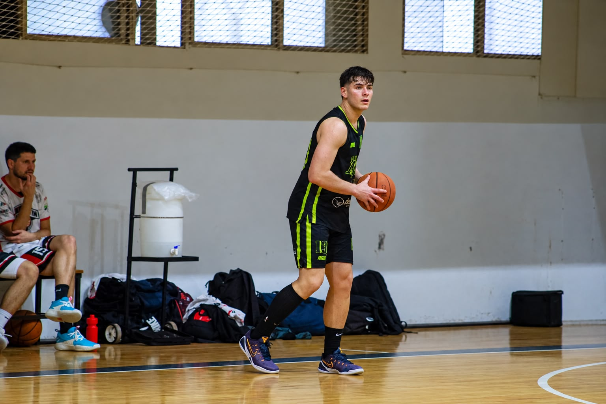

Jugador de básquet
Felipe Saldivar
Alero · Club Atlético María Juana
Altura
1,91 m
Dorsal actual
#6
Nacimiento
23/04/2004
Posición
Alero
Mi objetivo
Llegar a ser el mejor jugador posible. 🏀
Cada etapa es una oportunidad para seguir creciendo, aprender y competir al máximo.
Mi trayectoria
Alianza de Jesús María
Mi etapa de formación, hasta los 18 años.
Bochas Sport Club · 2023
Campeón provincial de Mayores.
Club Atlético Villegas · 2024
Competencia en el Torneo Federal.
El Tala de San Francisco · 2024
Campeón del Torneo Apertura y ascenso al Torneo Federal.
Central de Ceres · 2025–2026
Campeón del Apertura local de Mayores en 2025. Primera mitad de 2026 en el club.
Club Atlético María Juana · Actualidad
Mi etapa actual, vistiendo la camiseta número 6.
Mis highlights 🎥
Algunas de mis jugadas y momentos dentro de la cancha.